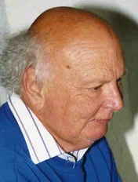

Тим Бернерс-Ли
Британский изобретатель
Создатель URI, URL, HTTP, HTML и Всемирной паутины и действующий глава Консорциума Всемирной паутины. Автор концепции семантической паутины, множества других разработок в области информационных технологий. Википедия
Родился:8 июня 1955 г. (67 лет), Лондон, Великобритания
Чем известен: создатель Всемирной паутины
В браке с: Розмари Лейт
Партнёр: Розмари Лейт
Родители: Мэри Ли Вудс
Сайт:www.w3.org/…
Смотрите также
